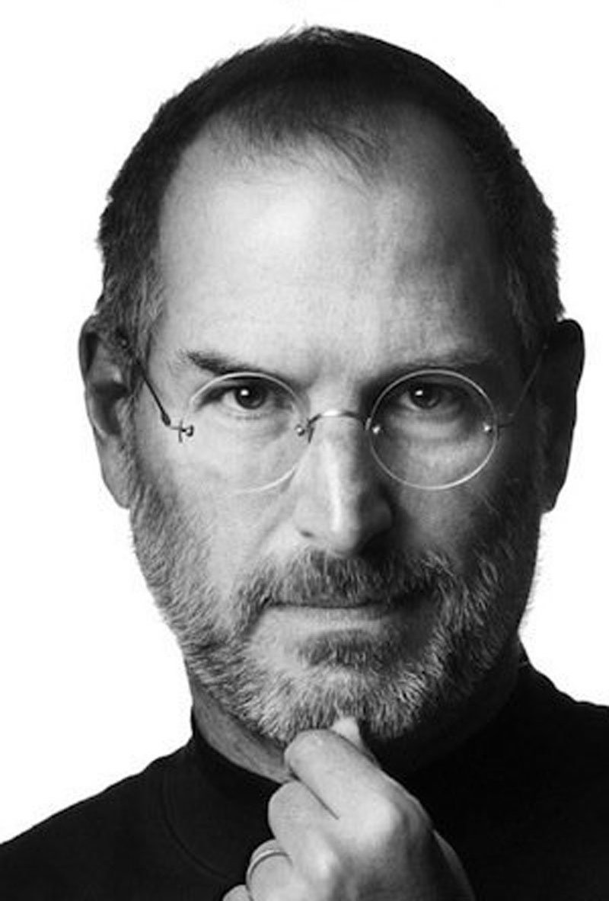

Steve Jobs
The Inventor of the Apple Inc.

Pioneer of the personal computer revolution with Steve Wozniak
Co-creator of the Macintosh, iPod, iPhone, iPad, and first Apple Stores
Co-creator of the Macintosh, iPod, iPhone, iPad, and first Apple Stores
- 1955 - Born in San Francisco, California, U.S.
- 1968 - Jobs was given a summer job by Bill Hewlett after Jobs cold-called him to ask for parts for an electronics project.
- 1971 - After Wozniak began attending University of California, Berkeley, Jobs would visit him there a few times a week. This experience led him to study in nearby Stanford University's student union.
- 1975 - Jobs and Wozniak attended meetings of the Homebrew Computer Club which was a stepping stone to the development and marketing of the first Apple computer.
- 1976 - Jobs, Wozniak, and Ronald Wayne founded Apple Computer (now called Apple Inc.) in the garage of Jobs's Los Altos home on Crist Drive.
- 1977 - Jobs and Wozniak introduced the Apple II at the West Coast Computer Faire. It was the first consumer product sold by Apple Computer and was one of the first highly successful mass-produced microcomputer products in the world.
- 1984 - Apple introduced the Macintosh, which was based on The Lisa and conceived by early Apple employee Jef Raskin.
- 1985 - Jobs submitted a letter of resignation to the Apple Board. Five additional senior Apple employees also resigned and joined Jobs in his new venture, NeXT.
- 1990 - NeXT workstations were first released priced at US $9,999.
- 1995 - The first film produced by the partnership, Toy Story with Jobs credited as executive producer, brought fame and critical acclaim to the studio when it was released.
- 1996 - Apple announced that it would buy NeXT for $427 million.
- 2005 - Jobs responded to criticism of Apple's poor recycling programs for e-waste in the US by lashing out at environmental and other advocates at Apple's annual meeting in Cupertino in April.
- 2011 - Jobs died at the age of 56 from pancreatic cancer at his Palo Alto, California home.
Here's a time line of Steve's life:
If you have time, you should read more about this incredible human being on his Wikipedia entry.